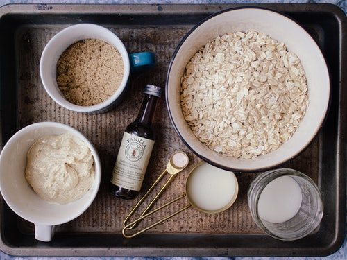
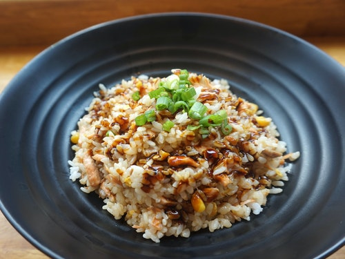
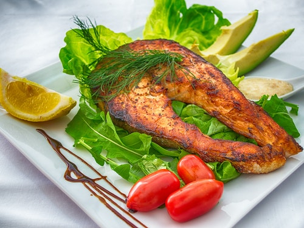
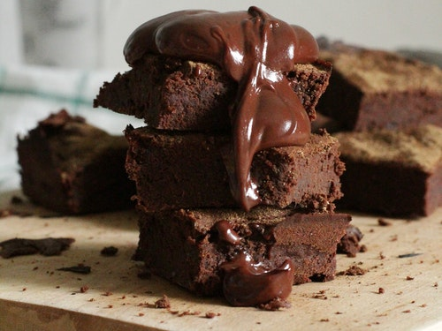
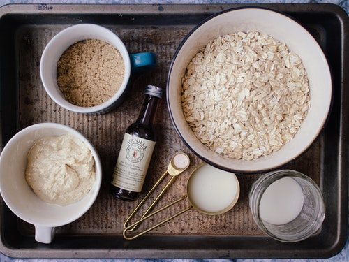
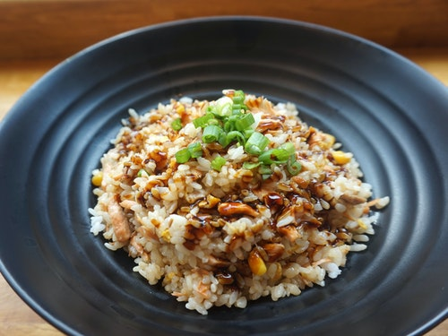
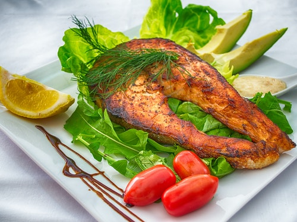
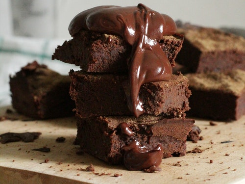

Day 1
Breakfast
papaya & blueberries
The possible health benefits of consuming papaya include a reduced risk of heart
disease, diabetes, cancer, aiding in digestion, improving blood glucose control in
people with diabetes, lowering blood pressure, and improving wound healing
Morning snack
brazil nutsBrazil nuts are rich in selenium, with just one nut containing 96 mcg, or 175% of the RDI Most other nuts provide less than 1 mcg, on average
Lunch
Cooked brown rice, chickpeas, corn kernels, finely sliced kale, cherry tomatoes dressed in extra virgin olive oil and lemon juice.
Brown rice is a highly nutritious food It is a whole grain that is relatively low in calories (216 calories per cup),high in fiber, gluten-free and can be incorporated into a variety of dishes
Afternoon Snack
Wholegrain cracker + avocado
Avocados are called a superfood for good reason: they’re like the comic book heros of fruits! Avocados
contribute unsaturated “good” fats, and good fats can help the body absorb fat-soluble nutrients Vitamins A,
D, K, and E. Healthy avocados contain 6g of naturally good fat per serving – one-third of a medium avocado.
Dinner
Pan-fried salmon fillet with stir fry Asian vegetables with ginger, garlic & chilli + a side of kimchi
Eating vegetables provides health benefits — people who eat more vegetables and fruits as part of an overall
healthy diet are likely to have a reduced risk of some chronic diseases. Vegetables provide nutrients vital
for health and maintenance of your body
Supper
Warm cup of milk + ground cinnamon, turmeric and ginger + Manuka honey
Hot or warm milk may also promote a sound sleep as it contains amino acid called
tryptophan that produces sleep inducing chemicals serotonin and melatonin that can help you sleep better
*Tip: Get into bed early for a good night sleep.
Day 2.
Breakfast
Wholegrain sourdough toast with boiled eggs + avocado
Whole eggs are among the most nutritious foods on the planet, containing a little bit of almost every nutrient you need. Omega-3 enriched and/or pastured eggs are even healthier
Morning snack
Greek yoghurt + kiwi fruit
Kiwis are small fruits that pack a lot of flavor and plenty of health benefits. Their green flesh is sweet and tangy. It’s also full of nutrients like vitamin C, vitamin K, vitamin E, folate, and potassium. They also have a lot of antioxidants and are a good source of fiber. Their small black seeds are edible, as is the fuzzy brown peel, though many prefer to peel the kiwi before eating it. It Can help treat asthma,It can also boots immune system
Lunch
kimchi + cooked brown rice
Cooked brown rice, chickpeas, corn kernels, finely sliced kale, cherry tomatoes dressed in extra virgin olive oil and lemon juice
Afternoon Snack
Chopped raw carrot with hummus
Scooping up your hummus or guac with a cup of raw, sliced carrots in place of 10 pita chips saves 80 calories and increases total fiber and nutrients. Research suggests the soluble fiber in carrots may curb belly fat too
Dinner
mixed vegetable soup
In particular, vegetable-based soups are a great option nutritionally as they combine a high nutrient density with a low energy density – this means that we get lots of key nutrients including vitamins and minerals for relatively few calories
Supper
Square of very dark chocolate + green tea
Dark chocolate is rich in minerals, such as iron, magnesium, and zinc. The cocoa in dark chocolate also contains antioxidants called flavonoids, which may provide several health benefits
*Tip: Don’t forget to get in some exercise.
Day 3.
Breakfast
Bircher muesli: soak overnight steel cut oats and milk
Oats are among the healthiest grains on earth.
They're a gluten-free whole grain and a great source of important vitamins, minerals, fiber and antioxidants.
Studies show that oats and oatmeal have many health benefits.
These include weight loss, lower blood sugar levels and a reduced risk of heart disease.
Morning snack
Handful mixed raw nuts
As cases of coronavirus continue to rise, taking daily precautions such as washing ... has been done on foods that help fight against COVID-19 specifically. ... eating it raw with hummus as a crunchy snack or mixing some into your salad. If you prefer them cooked, throw a handful in a pan for a quick stir-fry.
Lunch
Left over chunky vegetable and chicken soup + wholegrain sourdough toast
or most of us, eating leftover vegetables will not cause problems as long as they’re not spoiled and are reheated properly, which doesn’t have anything to do with the nitrates.
Afternoon Snack
Small pear + chunk of hard cheese
Dairy foods offer a unique package of nutrients, promote bone growth and development, and contribute to healthy gut function.
Dinner
Cooked quinoa mixed with lentils, grated and finely chopped vegetables
Chopping slices straight through cells, allowing their contents to spill out. This means nutrients, especially minerals such as potassium, can leak away. But it's not all bad news for chopping. It has several other effects on vegetables, some of which may be beneficial, at least in theory.
Supper
Frozen cherries
Eating cherries leads to a boost in antioxidant activity in the body — even after just one-and-a-half servings of tart cherries, commonly known as sour cherries
*Tip: Do a little meditation to help wind down from your day.
Day 4.
Breakfast
Baby spinach, green peas and cheese
Spinach is rich in minerals such as calcium, magnesium, and phosphorus, all of which play a significant role in strengthening bones and aiding in healthy development
Morning snack
Slices of papaya with a spritz of lime juice
Papaya is a great source of fibre, which is beneficial for a number of reasons: digestion, probiotic food, reducing LDL (bad) cholesterol levels as well as cleansing the intestines. Papaya is known to relieve constipation. Limes are also rich in antioxidants.
Lunch
cooked brown rice
The antioxidants found in brown rice help prevent cell injury caused by unstable molecules called free radicals and reduce inflammation in the body
Afternoon Snack
Greek yoghurt + Manuka honey + a few crushed nuts
The Nutrition Source at Harvard's T.H. Chan School of Public Health explains that plain yogurt is a good source of protein and calcium, but it also contains live bacterial content. These live microorganisms are called probiotics, and they can help improve your immune function, improve your digestion and possibly even protect against infections from harmful bacteria.
Dinner
Thai beef salad
Beef is a good source of Vitamin B6 and B12. You can control the amount of fat by trimming the beef.
Supper
A fresh date + green tea
Fresh dates contain anthocyanidins and carotenoids, while dried dates contain polyphenols – just like green tea. Experiments in food chemistry show that Khalas (aka Madina) dates are highest in antioxidants when compared to other date varieties. 2. Dates can be good for blood sugar balance.
*Tip: Get outside at some point in your day for some sunshine and fresh air.
Day 5.
Breakfast
Smoothie: milk, Greek yoghurt, berries, papaya + avocado + ground flaxseed
Calcium, vitamin D3 and vitamin K are nutrients that improve bone health. Smoothies rich in these nutrients contain spinach, green vegetables and citrus fruits as chief ingredients. So for the best breakfast in Edmond, you should try some cool smoothies that ensure your bones stay healthy forever.
Morning snack
Red capsicum + hummus
Red peppers contain more than 200 percent of your daily vitamin C intake. Besides being a powerful antioxidant, vitamin C helpsthe proper absorption of iron. If you are iron deficient, try combining red peppers with your iron source for maximum absorption.
Lunch
Left over Thai beef salad + cooked brown rice
The antioxidants found in brown rice help prevent cell injury caused by unstable molecules called free radicals and reduce inflammation in the body
Afternoon Snack
Wholegrain crackers + natural peanut butteR
This nutrient-rich snack rings in at just 193 calories and offers 2 grams of fiber. The combination of complex carbs and protein help to keep your blood sugar stable and keep you feeling full longer
Dinner
Mexican stuffed sweet potato
Sweet potatoes are also high in Vitamin A, which plays an important role in vision, as well as proper bone and immune system development; Vitamin C, which is essential for healthy tissue development and healing wounds; and manganese, which helps the body process nutrients and keep blood sugar low.
Supper
Green tea + mandarin
Daily consumption of 2-3 cups of unsweetened brewed tea provides 200-500 mg of flavonoids that can help support a healthy heart as part of a diet consistent with dietary guidelines. Lipton Mandarin Orange Green Tea bags enliven the delicate taste of green tea with the character of juicy mandarin orange.
*Tip: Enjoy some alcohol but not too much – alcohol can suppress our immune system, affect our gut environment and our sleep.
Day 6.
Breakfast
Mixed saute mushrooms on seeded sourdough with 2 poached eggs + crumbled feta
Breakfast may be the most important meal of the day, but if you've been sticking with the same scrambled eggs for years, it may be time for a breakfast makeover. Why not try poached eggs, instead? While poaching eggs may require refining your cooking technique, it pays off in tender whites and creamy yolks.
Morning snack
Small apple slices smeared with natural peanut butter or almond spread
Apples with peanut butter are healthy, as long as you stick with the recommended serving size and allow for the calories in your overall daily count.
Lunch
Brown rice sushi with salmon/ tuna
Packed with fresh fish, crunchy vegetables and fiber-filled rice, sushi can be a nutrient-packed, healthy meal. One wrong step, however, can add an abundance of fat, calories or sodium. Learn the ins and outs of what makes a healthy sushi roll to ensure that your Japanese meal stays on the right path.
Afternoon Snack
Wholegrain cracker + cheese
Multi-grain crackers also boost your intake of B vitamins. Collectively, B vitamins help you derive energy from your diet, converting nutrients from food into useable fuel to keep you going throughout the day. Vitamin B3 also keeps your skin healthy and nourishes your nervous system, while vitamin B1 helps to regulate your appetite. Multi-grain crackers also contain vitamin B6, a nutrient your body needs to produce healthy red blood cells.
Dinner
white fish, leaf salad
White-fleshed fish, in particular, is lower in fat than any other source of animal protein, and oily fish are high in omega-3 fatty acids, or the "good" fats. Since the human body can't make significant amounts of these essential nutrients, fish are an important part of the diet
Supper
Share a dessert, if you wish
Their presence on the menu makes us feel satisfied after a meal, and compensates for low blood sugar. The desire to improve your mood by ingesting sugar can also be a factor. Sweet snacks increase our production of the so-called hormone of happiness. Your habits also play an important role.
*Tip: Spend some time with your loved ones and people who make you smile and laugh.
Day 7.
Brunch
Porridge with cinnamon, poached apple + crushed nuts
Stewed apples can help to alleviate constipation because they're full of fibre. The insoluble fibre increases bulk in the stools, while the soluble fibre increases water content. Together, these help stools to move through the digestive system at a healthy pace.
Afternoon Snack
Nibble platter: chopped raw vegetable sticks, hummus, cheese, dried fruits, wholegrain crackers
Aside from their natural good taste and great crunchy texture alongside wonderful colors and fragrances, eating a large serving of fresh, raw vegetables each day can have significant health benefits.
Dinner
Roast grass-fed lamb + roast sweet potato, pumpkin, cauliflower, brussel sprouts, zucchini, carrot and onion
Leafy green vegetables are an important part of a healthy diet. They're packed with vitamins, minerals and fiber but low in calories. Eating a diet rich in leafy greens can offer numerous health benefits including reduced risk of obesity, heart disease, high blood pressure and mental decline
Supper
Dark chocolate dipped strawberries
Dark chocolate is your best option, as milk chocolate is typically quite high in sugar and cream. Bittersweet dark chocolate with a high percentage of cocoa (generally 60 percent to 80 percent) offers the most health benefits without tasting too bitter to enjoy.
*Tip: Enjoy a sleep in and slow start to your morning with plenty of rest and relaxation
 







.png)
.png)
.png)